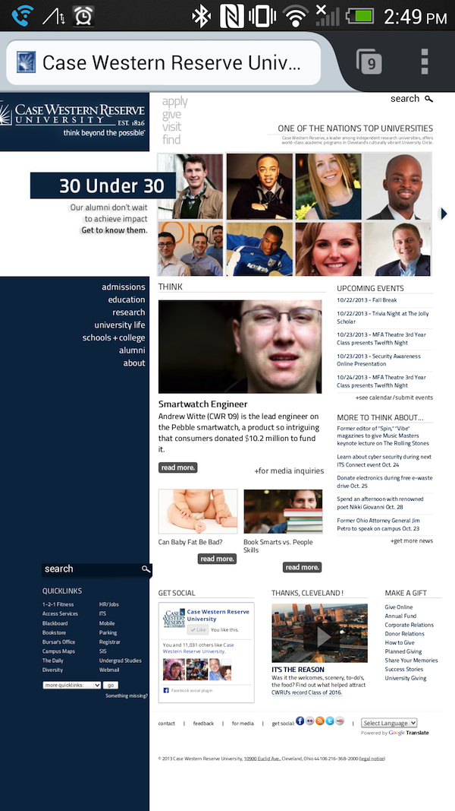
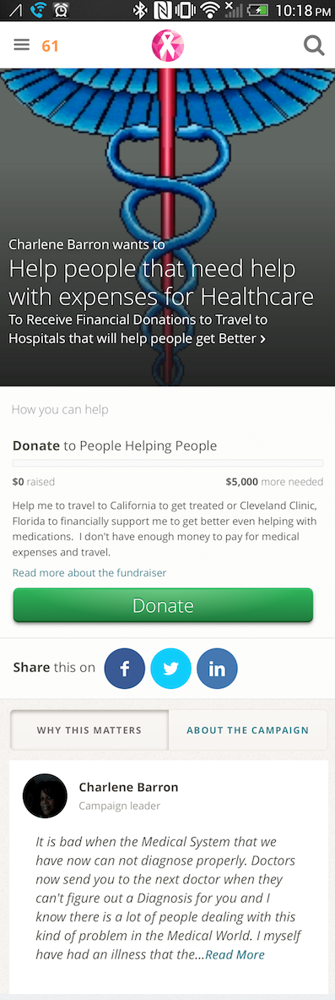
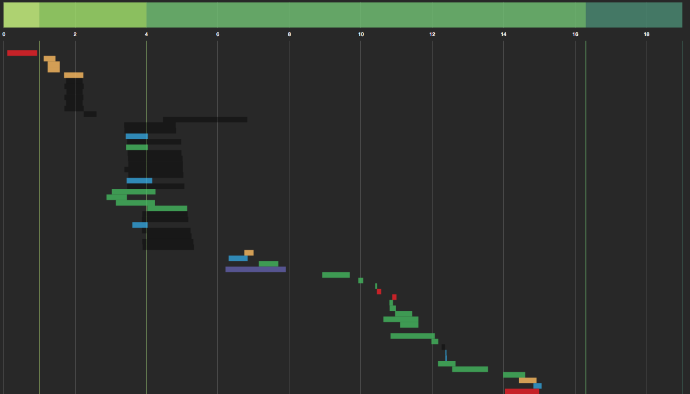

Putting Mobile First
presented by
Tom Dooner
Mobile Last

Obligatory XKCD

Not Mobile Last

Mobile First
-
Why
- Accessibility
- Performance
- Simplicity
-
How
- ???
25%
2014
- The year when mobile traffic surpasses desktop traffic
- (oh hey, that's next year!)
Performance
Performance @ Google

| Type of Delay | Magnitude | Duration | Impact |
|---|---|---|---|
| Pre-header | 50 ms | 4 weeks | — |
| Pre-header | 100 ms | 4 weeks | -0.20% |
| Post-header | 200 ms | 6 weeks | -0.29% |
| Post-header | 400 ms | 6 weeks | -0.59% |
| Post-ads | 200 ms | 4 weeks | -0.30% |
Performance @ Amazon
- 100 ms = -1% of sales
Performance
- 3+ Seconds = -40% Users
Simplicity
How?
- Eye on Performance
- Avoiding UI Dangers
- Seize the Opportunities!

Eye on Performance
Latency
- 3G: > 400 ms
- 4G: > 150 ms
First Cuts
- Reduce Asset Count
- Use CDN + Asset Sharding
- Minify JS/CSS
Second Cuts
- Use efficient CSS
- HTML Streaming
- mod_pagespeed / ngx_pagespeed
- Prioritize the Critical Rendering Path
Prioritize the Critical Rendering Path
Progressive Enhancement
- Don't rely on JS for mission-critical functionality
Development Patterns
- Responsive Stylesheets via SASS/LESS
- JS Script Loader
@mixin enhance($breakpoint) {
@if length($breakpoint) == 1 {
@media only screen and (min-width: $breakpoint) {
@content;
}
} @else {
$from: nth($breakpoint, 1);
$until: nth($breakpoint, 2);
@media only screen and
(min-width: $from) and (max-width: $until - 1) {
@content;
}
}
}
.post-body {
width: 100%;
@include enhance(360px) {
width: 66%;
}
}
UI Pitfalls
- User cannot hover
- Native v. Mobile scrolling direction
- Prefer Top/Bottom <form> labels over Left/Right ones
Native Control Danger
Opportunities
- Easy Media Upload
- Geolocation
Thanks!
- @tomdooner
- tom.dooner@causes.com
- Slides: https://github.io/ted27/putting-mobile-first
-
Causes is hiring:
- https://www.causes.com/jobs
- Software Engineer, DevOps Engineer, Product Designer, and Internships!